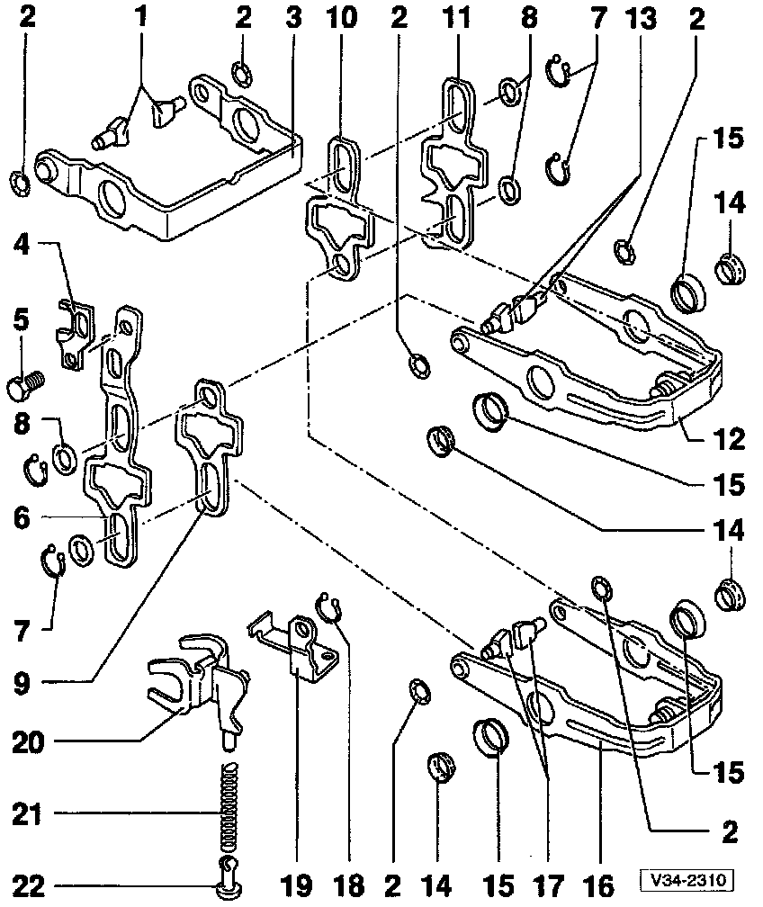
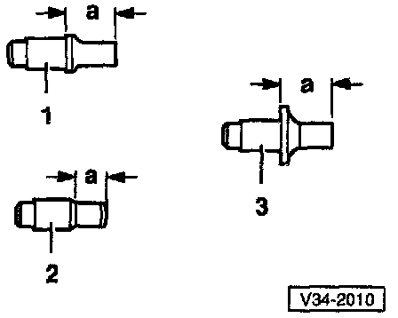
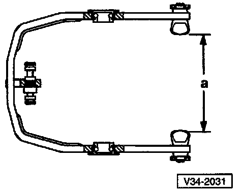

Shift Fork: Service and Repair

1 - Shift segment
- Must still rotate freely after installing circlip

Identifying Shift Segments
(1) - 1st and 2nd gear shift segments
Dimension a = 12.1 mm (0.476 in)
(2) - 3rd gear (3GR) and 4th gear (4GR) shift segments
Dimension a = 7.7 mm (0.303 in)
(3) - 5th gear shift segments
Dimension a = 12.1 mm (0.476 in)
2 - Circlip
- Always replace
- Pry off with screwdriver
Installing Circlip
- Press new circlip into shift segment groove with socket
A = 10 mm socket with handle
B = Protective jaws for vise
- The shift segments must still rotate freely after installing the circlip
3 - 5th gear shift fork
Adjusting 5th Gear
- Engage 5th gear
- Loosen bolt (1)
- Press operating sleeve and shift fork in direction of (arrows) and tighten bolt (1)
^ Tightening torque: 25 Nm (18 ft lb)
- Check measurement:
^ It must NOT be possible to slide a 0.2 mm feeler gauge between operating sleeve and gear
- If necessary, repeat adjustment procedure
- Disengage 5th gear
NOTE: Operating sleeve must now be in neutral position. Synchro-ring must be able to move freely.
- Install transmission housing cover
4 - 5th gear selector jaw
5 - Bolt
- Tightening torque: 25 Nm (18 ft lb)
6 - 5th gear selector plate
7 - Circlip
8 - Washer
9 - 3rd gear (3GR)/4th gear (4GR) selector plate
10 - 1st/2nd gear selector plate
11 - Reverse gear selector plate
12 - 3rd (3GR/4th gear (4GR) shift fork

Shift Fork With Installed Shift Segments
- 1st/2nd gear shift fork
Dimension a = 87.2-87.9 mm (3.43-3.46 in)
- 3rd gear (3GR)/4th gear (4GR) shift fork
Dimension a = 96.0-96.7 mm (3.78-3.81 in)
13 - Shift segment
- Must still rotate freely after installing circlip
Identifying Shift Segments
(1) - 1st and 2nd gear shift segments
Dimension a = 12.1 mm (0.476 in)
(2) - 3rd gear (3GR) and 4th gear (4GR) shift segments
Dimension a = 7.7 mm (0.303 in)
(3) - 5th gear shift segments
Dimension a = 12.1 mm (0.476 in)
14 - Bearing
15 - Bearing inner race

Removing Bearing Inner Race
- Be careful not to bend shift forks when removing and installing inner race

Installing Bearing Inner Race
- Press in up to stop
16 - 1st/2nd gear shift fork
Shift Fork With Installed Shift Segments
- 1st/2nd gear shift fork
Dimension a = 87.2-87.9 mm (3.43-3.46 in)
- 3rd gear (3GR)/4th gear (4GR) shift fork
Dimension a = 96.0-96.7 mm (3.78-3.81 in)
17 - Shift segment
Identifying Shift Segments
(1) - 1st and 2nd gear shift segments
Dimension a = 12.1 mm (0.476 in)
(2) - 3rd gear (3GR) and 4th gear (4GR) shift segments
Dimension a = 7.7 mm (0.303 in)
(3) - 5th gear shift segments
Dimension a = 12.1 mm (0.476 in)
18 - Circlip
19 - Support
- For reverse gear shift fork
20 - Reverse gear shift fork
21 - Spring
22 - Sliding piece
- Domed-type